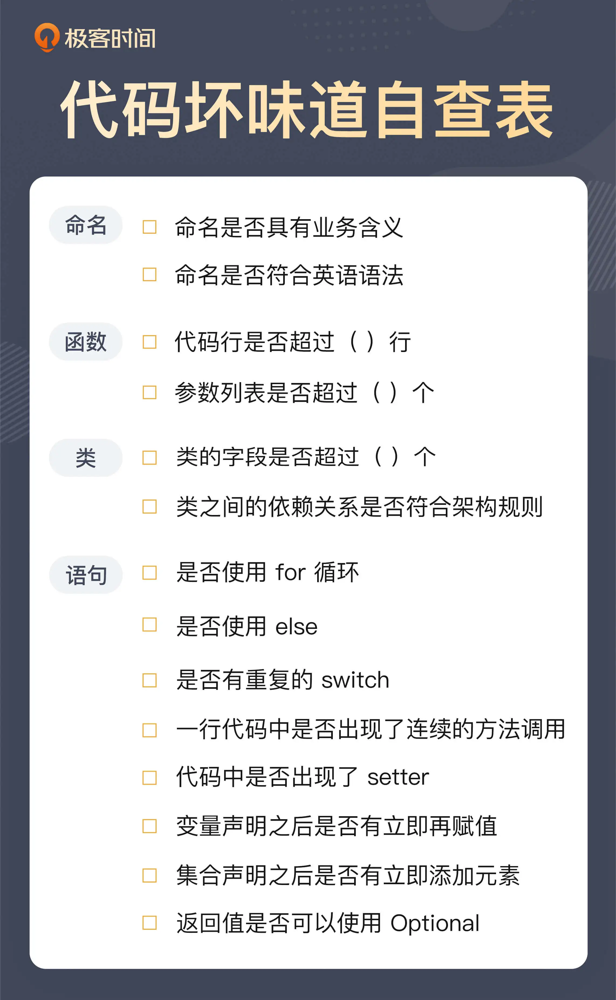

- 00 开篇词 这一次，我们从“丑”代码出发.md
- 01 缺乏业务含义的命名：如何精准命名？.md
- 02 乱用英语：站在中国人的视角来看英文命名.md
- 03 重复代码：简单需求到处修改，怎么办？.md
- 04 长函数：为什么你总是不可避免地写出长函数？.md
- 05 大类：如何避免写出难以理解的大类？.md
- 06 长参数列表：如何处理不同类型的长参数？.md
- 07 滥用控制语句：出现控制结构，多半是错误的提示.md
- 08 缺乏封装：如何应对火车代码和基本类型偏执问题？.md
- 09 可变的数据：不要让你的代码“失控”.md
- 10 变量声明与赋值分离：普通的变量声明，怎么也有坏味道？.md
- 11 依赖混乱：你可能还没发现问题，代码就已经无法挽救了.md
- 12 不一致的代码：为什么你的代码总被吐槽难懂？.md
- 13 落后的代码风格：使用“新”的语言特性和程序库升级你的代码.md
- 14 多久进行一次代码评审最合适？.md
- 15 新需求破坏了代码，怎么办？.md
- 16 熊节：什么代码应该被重构？.md
- 17 课前作业点评：发现“你”代码里的坏味道.md
- 结束语 写代码是一件可以一生精进的事.md
00 开篇词 这一次，我们从“丑”代码出发
开篇词 这一次，我们从“丑”代码出发## 开篇词 这一次，我们从“丑”代码出发
你好，我是郑晔！我又回来了！
我在“极客时间”里已经写了两个专栏，分别是《[10x 程序员工作法]》和《[软件设计之美]》，从工作原则和设计原则两个方面对软件开发的各种知识进行了探讨，帮助你搭建了一个开启程序员精进之路的框架。
不过，无论懂得多少道理，程序员依然要回归到写代码的本职工作上。所以，这次我准备和你从代码的坏味道出发，一起探讨如何写代码。
千里之堤毁于蚁穴
为什么要讲这个话题，就让我们先从一次代码评审讲起。在一次代码评审中，我注意到了这样一段代码：
public void approve(final long bookId) {
...
book.setReviewStatus(ReviewStatus.APPROVED);
...
}
这是在一个服务类里面写的，它的主要逻辑就是从仓库中找出一个作品，然后，将它的状态设置为审核通过，再将它存回去。前后的代码都属于常规的代码，但是，设置作品评审状态的代码引起了我的注意，于是有了下面这段对话。
我：这个地方为什么要这么写？
同事：我要将作品的审核状态设置为审核通过。
我：这个我知道，但为什么要在这里写 setter 呢？
同事：你的意思是？
我：这个审核的状态是作品的一个内部状态，为什么服务需要知道它呢？也就是说，这里通过 setter，将一个类的内部行为暴露了出来，这是一种破坏封装的做法。
同事被我说动了，于是这段代码变成了下面这个样子：
public void approve(final long bookId) {
...
book.approve();
...
}
之所以我注意到这段代码，完全是因为这里用到了 setter。在我看来，setter 就是一个坏味道，每次一看到 setter，我就会警觉起来。
setter 的出现，是对于封装的破坏，它把一个类内部的实现细节暴露了出来。我在《软件设计之美》中讲过，面向对象的封装，关键点是行为，而使用 setter 多半只是做了数据的聚合，缺少了行为的设计，这段代码改写后的 approve 函数，就是这里缺少的行为。
再扩展一步，setter 通常还意味着变化，而我在《软件设计之美》中讲函数式编程时也说过，一个好的设计应该尽可能追求不变性。所以，setter 也是一个提示符，告诉我们，这个地方的设计可能有问题。
你看，一个小小的 setter，背后却隐藏着这么多的问题。而所有这些问题，都会让代码在未来的日子变得更加不可维护，这就是软件团队陷入泥潭的开始。
我也一直和我团队的同学说，“写代码”有两个维度：正确性和可维护性，不要只关注正确性。能把代码写对，是每个程序员的必备技能，但能够把代码写得更具可维护性，这是一个程序员从业余迈向职业的第一步。
将坏味道重构为整洁代码
或许你也认同代码要有可维护性，也看了很多书，比如《程序设计实践》《代码整洁之道》等等，这些无一不是经典中的经典，甚至连怎么改代码，都有《重构》等着我们。没错，这些书我都读过，也觉得从中受益匪浅。
不过，回到真实的工作中，我发现了一个无情的事实：程序员们大多会认同这些书上的观点，但每个人对于这些观点的理解却是千差万别的。
比如书上说：“命名是要有意义的”，但什么样的命名才算是有意义的呢？有的人只理解到不用 xyz 命名，虽然他起出了自认为“有意义”的名字，但这些名字依然是难以理解的。事实上，大部分程序员在真实世界中面对的代码，就是这样难懂的代码。
这是因为，很多人虽然知道正面的代码是什么样子，却不知道反面的代码是什么样子。这些反面代码，Martin Fowler 在《重构》这本书中给起了一个好名字，代码的坏味道（Bad Smell）。
在我写代码的这 20 多年里，一直对代码的坏味道非常看重，因为它是写出好代码的起点。有对代码坏味道的嗅觉，能够识别出坏味道，接下来，你才有机会去“重构（Refactoring）”，把代码一点点打磨成一个整洁的代码（Clean Code）。Linux 内核开发者 Linus Torvalds 在行业里有个爱骂人的坏名声，原因之一就是他对于坏味道的不容忍。
所以，我也推荐那些想要提高自己编程水平的人读《重构》，如果时间比较少，就去读第三章“代码的坏味道”。
不过，《重构》中的“代码的坏味道”意图虽好，但却需要一个人对于整洁代码有着深厚的理解，才能识别出这些坏味道。否则，即使你知道有哪些坏味道，但真正有坏味道的代码出现在你面前时，你仍然无法认得它。
比如，你可以看看 Info、Data、Manager 是不是代码库经常使用的词汇，而它们往往是命名没有经过仔细思考的地方。在很多人眼中，这些代码是没有问题的。正因如此，才有很多坏味道的代码才堂而皇之地留在你的眼皮底下。
所以，我才想做一个讲坏味道的专栏，把最常见的坏味道直接用代码形式展现出来。在这个专栏里，我给你的都是即学即用的“坏味道”，我不仅会告诉你典型的坏味道是什么，而且也能让你在实际的编程过程中发现它们。比如前面那个例子里面的 setter，只要它一出现，你就需要立即警觉起来。
这里我也整理了一份“坏味道自查表”，把一些明显的“坏味道”信号列了出来，你可以和自己的代码做对比。

除了为你列出来哪些代码有坏味道之外，我还会给你讲支撑这些“坏味道”之所以为“坏味道”的原因，比如说：长方法和大类之所以为坏味道，因为它们都违背了单一职责的原则。
有坏味道的代码需要经过重构才能长成新的样子，在这个专栏里，我也会提到一些重构的手法，比如，改名（Rename）、提取方法（Extract Method）等等。在今天，拜许多能力强大的 IDE 所赐，重构已经变得越来越自动化，《重构》里的很多手法已经成为了 IDE 中的一个选项。
我还想给你一个安全提示，即便 IDE 功能再强大，也不要忘了重构的重要根基：测试。即便像 Java 这样，IDE 功能已经非常强大了，依然会有一些像反射之类的场景可能会从自动化重构的鼻子底下溜走。所以，重构一段代码之前，最好能够给它写下测试，确保改动前后的代码，功能上是一致的。
如果你订阅过我的《[10x 程序员工作法]》和《[软件设计之美]》，你就会发现，三个专栏一脉相承，这些背后的道理恰恰就是我在那两个专栏中已经提到过的内容。所以，三个专栏一并服用，效果会更佳。
写在最后
最后，还是要做一个自我介绍。我叫郑晔，一个写代码超过二十年的程序员，做过与软件开发的各种工作：编代码、带团队、做咨询、写开源。正如前面所说，我已经在极客时间平台上写了两个专栏，分享我在软件开发中的各种思考。这次，我会带你进入到我的基本功里，帮你一起写好代码。
十年前，我在 InfoQ 写过一个专栏《代码之丑》，把一些真实世界的代码展示了出来，让大家看到丑陋代码是什么样子的。
不少读者都表示，那个专栏让他们受益匪浅。不过，那个系列只是我日常工作的随手之作，没有更好地整理。这个专栏就是脱胎于 InfoQ 上的《代码之丑》，我对相关内容进行了更系统地整理，保证即便看过那个《代码之丑》专栏，你依然能够在这里有所收获。
这是一条通往代码精进之路，我愿意与你一起前行，成为你在这条路上的向导。如果你想摆脱平庸的小白程序员状态，成为一个更优秀的程序员，那么，请加入我的专栏，让我们一起修炼，日益精进写代码的手艺！
© 2019 - 2023 Liangliang Lee. Powered by gin and hexo-theme-book.